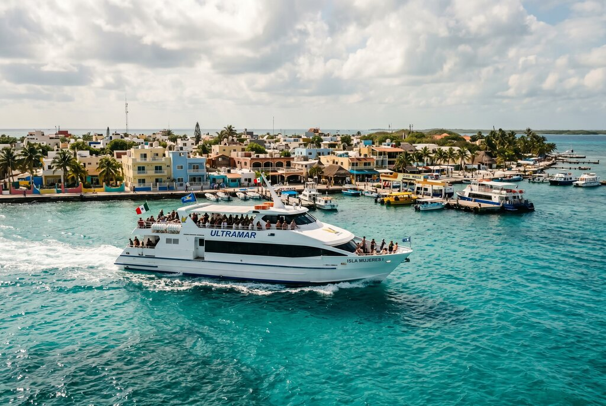
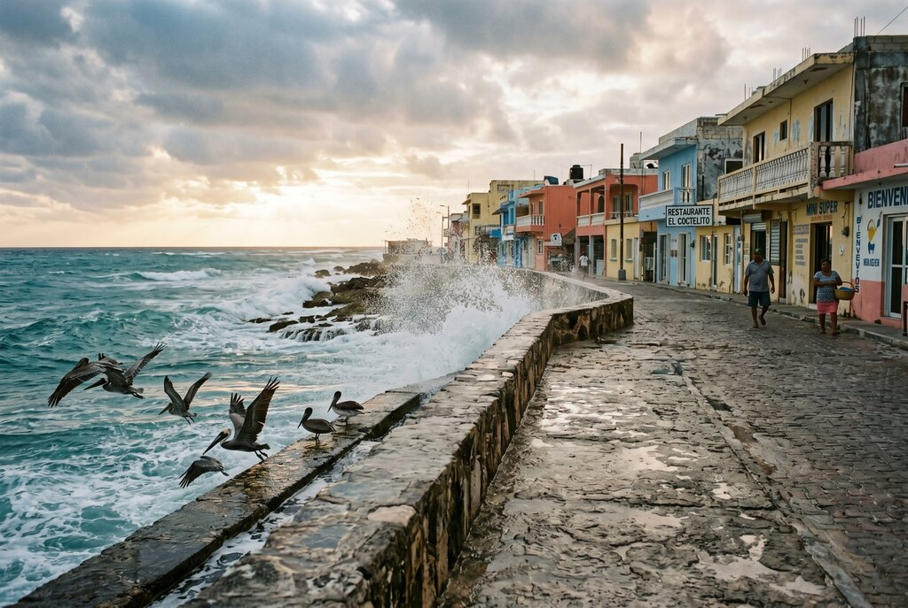
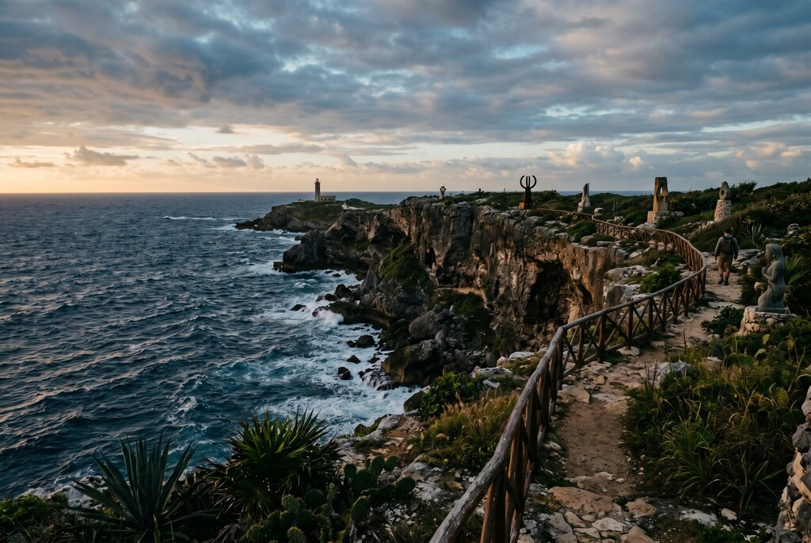

Isla Mujeres · Updated guide
Isla Mujeres: The Complete Guide
The 2026 version: ferries, beaches, golf carts, Punta Sur, where to stay, what to skip, and why the island only makes sense once you stop treating it like a proof-of-turquoise errand.
The 2019 internet answer was basically: pretty island, easy day trip, very relaxing. That was not wrong. It was just incomplete. Isla Mujeres still gives you the famous shallow blue water, but now the smarter guide is about timing, crowd management, where the island gets more interesting, and how not to waste it by treating it like one long beach selfie with transportation attached.

The crossing is short. The mood shift is bigger than the mileage has any right to be.
The updated framing
Same island, newer reality: more demand, more day-trippers, more temptation to do it lazily. The better version of Isla Mujeres still exists. You just have to choose it on purpose.
Still easy
The logistics remain pleasantly low-drama. Cancun airport, ferry terminal, twenty-ish minutes on the water, done. That is part of the island’s power.
More crowded where expected
Playa Norte, midday carts, and the obvious north-end circuit can feel like everybody read the same caption at once. Timing matters more now than it did in softer internet eras.
Better once you keep going
The southern cliffs, side streets, east-side seawall, and low-key snorkel spots are what stop the island from becoming just another beach with branding.
Fictional stories inspired by real life!
May include promotional or affiliate links.
The ferry out of Puerto Juárez is full of people doing vacation math.
How early is early enough. Whether a golf cart is worth it. If Playa Norte will still look like the water was invented by an emotionally available gemstone. Whether this can be done in half a day, or whether half a day is a lie people tell themselves because they enjoy underestimating islands.
A ticket agent named Renata slides a boarding stub under the glass and watches the line build behind me with the calm expression of somebody who has seen a lot of tourists behave as if short boat rides exempt them from planning.
“People ask if they need a full day,” she says. “The ones who ask that usually waste most of it.”
That is the right opening lesson.
Isla Mujeres is still one of the easiest escapes in the Mexican Caribbean. It is still close to Cancun. It is still small enough that golf carts make sense and large enough that acting like you have seen it in ninety minutes is a little embarrassing. The famous beach is still beautiful. The sea is still offensively photogenic. But the complete guide now has to explain something the older internet versions mostly skipped: the island works best when you treat it as a place, not a checklist.
First: what Isla Mujeres actually is
Isla Mujeres is a narrow island off the coast of Cancun in Quintana Roo, Mexico. It sits close enough to the mainland to feel easy, but the water crossing changes the mood immediately. Even a short ferry ride gives you that helpful sensation that the day has acquired edges. Mainland noise drops. Planning gets simpler. Everybody starts pretending they are more relaxed than they were forty minutes ago.
The north end is the social and practical core: ferry arrivals, beach clubs, bars, shops, beach hotels, carts, chatter, and Playa Norte doing exactly what its reputation says it will do. The center and middle of the island give you groceries, murals, neighborhood life, and the useful reminder that people live here full-time and not merely for your sunset. The south end gives you Punta Sur, sharper sea, old Ixchel associations, and the kind of coastline that interrupts the beach fantasy in the best possible way.
If you only know one end of the island, you do not know the island yet.
A brief history, because places are better with context
Long before ferry schedules and matching resort bracelets, the island was associated with Ixchel, the Maya goddess linked to fertility, healing, the moon, and generally having a much more interesting résumé than most modern destinations. The Spanish later named the island after the female figurines they found there. Pirates liked the area. Fishermen did too. Fermín Mundaca eventually left behind the island’s most dramatic historic side note, complete with romance, power, ruins, and enough legend to keep every guidebook slightly suspicious of its own certainty.
You do not need to memorize the timeline. You just need to know that Isla Mujeres was never only a beach. The older layers are still why the island feels deeper at the edges than the marketing copy suggests.
What to do on Isla Mujeres now
The obvious answer is beach. The complete answer is beach plus contrast.
Playa Norte deserves its fame. The water is shallow, warm, and almost disrespectfully pretty. It is good for floating, low-stakes swimming, sunset lingering, and reminding yourself that humans will forgive a lot when the sea is that color. Go early if you want the soft version. Go later if you want drinks and more people proving to themselves that beauty exists.
Then keep moving.
Punta Sur is where the island stops acting cute and starts acting ancient. Cliffs. Wind. Sculpture-park energy. The small temple site tied to Ixchel. The feeling that sea and rock were here having a more serious conversation long before anybody arrived asking where the best mojito might be. Get there early. Late morning onward, it starts filling with the exact energy that makes all beautiful viewpoints slightly less profound.
The Malecón on the Caribbean side is one of the island’s best corrective experiences. Rougher water, harder light, salt spray, pelicans with union-shop confidence, and a seawall that makes the whole place feel more honest. A shopkeeper named Aurelia tells me most visitors want “the water that hugs them first.” She is not wrong. This side gives you the water that talks back.
Snorkeling still matters, but choose the style carefully. If you want something lower-drama than a big packaged reef outing, the calmer pockets around the north end are often more satisfying than people expect. If you want a fuller excursion, the island remains one of the practical jumping-off points for snorkeling and dive trips around the nearby reef system and MUSA. Just remember that “clear” and “safe” are not synonyms, and roped swim areas are not decorative suggestions.

Garrafón de Castilla remains one of the smarter south-end moves if you want snorkeling and sea access without fully submitting to louder packaged-park energy. The reason people love it is not mystery. It is simpler, cheaper, and calmer than the more aggressively monetized alternatives nearby. I enjoy a place that quietly wins by not behaving like a corporate team-building exercise.
Hacienda Mundaca is worth your attention if you like travel with one haunted footnote. It will not compete with beach beauty on first glance, which is exactly why I respect it. It gives you story, ruins, legend, and the satisfying reminder that not every meaningful stop on an island has to come with a towel and a frozen cocktail menu.
The side streets matter more than most guides admit. La Gloria, murals, fruit stands, little churches, local kitchens, hardware-store energy, golf carts parked outside ordinary life. This is where the island becomes inhabited instead of merely consumed. A fruit vendor named Marisol tells me, “People think small means fast.” I have heard worse travel philosophy.
The controversial take: Playa Norte is not the whole argument
You should go to Playa Norte. I am not in a war with famous beaches. I just dislike when a destination gets reduced to the prettiest three percent of itself and then everybody starts behaving as if they have done the place justice.
Playa Norte is the invitation. It is not the full conversation.
The island’s real value is the combination: one postcard beach, one dramatic cliff edge, one rough-water seawall, one low-key snorkeling pocket, one rumor-heavy historic site, one afternoon wandering until you stop hearing the beach clubs and start hearing residents. That layered version is what makes Isla Mujeres worth more than a quick proof-of-life excursion from Cancun.
If all you want is famous shallow blue water, you can absolutely get it here. If you want a place that lingers, keep driving south and keep walking inland.
Where to stay
The right stay depends on which version of Isla Mujeres you want to wake up inside. If you want the short luxury answer instead of a fog machine of vague recommendations, here it is.
- Privilege Aluxes is the clean north-end adults-only pick if your priority is Playa Norte access and easy walkability. On its official site, it positions itself as a five-star adults-only hotel with direct beach access, suites, spa, wet bar, and four dining venues. Translation: best for couples who want the island’s easiest beautiful-water life without overcomplicating anything.
- Izla Hotel by Fiesta Americana is the calmer boutique-leaning choice if you want the island’s quieter side. The hotel currently describes itself as a 123-room property on the tranquil southern tip with direct private access to a swimmable beach, which is rarer here than beach marketing would like you to believe.
- Impression Isla Mujeres by Secrets is the current splurge name if you want top-end all-inclusive energy, high-touch service, and the sort of stay that makes people start using the phrase “elevated experience” without irony.
Stay near the north end if you want beach access, walkability, and the easiest ferry logistics. This is best for short stays, first-timers, and anyone who wants Playa Norte close enough to touch before breakfast.
Stay around Centro / mid-island if you want the town to matter. You trade a little instant-beach fantasy for better food access, more local rhythm, easier practical errands, and a less resort-bubbled version of the island.
Stay south if you want quiet, sea views, and the feeling of being one step removed from the busiest circuit. The tradeoff is that you will care more about carts, taxis, and dinner planning, which is not tragic. It is called logistics. Adults do them.
The mistake is not budget-related; the mistake is booking only for the postcard and forgetting how much your mornings and evenings determine whether you love a place.
Where to eat and drink without turning the day into a spreadsheet
Eat seafood. This is not radical advice, but it remains correct.
You want grilled fish, ceviche, shrimp tacos, cold beer with salt still on your shoulders, and at least one meal where the table feels more local than optimized. The island does casual beach lunches very well, but some of the better moods come from drifting just off the main strip and letting dinner happen where the lighting is less eager and the menu sounds like it has lived a little.
A bartender named Joel tells me tourists keep ordering the island version of certainty: one famous beach, one golf cart, one sunset cocktail, one seafood platter, done. “That’s fine,” he says, polishing a glass with the expression of a man who has met too many itineraries. “But if you stay the night, you eat better.”
He is right. Islands often cook more honestly after the day-trippers leave.
How to get there
The usual route is still Cancun International Airport to the ferry terminals, then over by Ultramar. Puerto Juárez is the cleanest default and usually the one I would recommend first because it is straightforward, frequent, and built for people doing exactly this trip. Additional crossings also operate from Playa Tortugas and Playa Caracol in Cancun, and they can make sense depending on where you are staying.
Schedules and fares change, which is travel’s favorite hobby, so check the official ferry operator before you lock anything in. The route page currently reminds passengers to arrive early, and honestly that is wise. Caribbean travel still rewards anybody who behaves as though lines and weather exist.
If you are staying in Costa Mujeres, pairing the mainland with Isla Mujeres still makes a lot of sense. Costa Mujeres gives you the polished sleep. Isla gives you the texture.
How to get around
Golf carts remain the island cliché because the cliché happens to be useful. They are still the iconic way to move around, especially if you plan to see both ends of the island in one day. Reserve ahead in busy periods if your schedule depends on it. Scooters exist. Taxis exist. Walking absolutely works in the north end and central core, which is good because some of the island’s better details only reveal themselves at walking speed.
The key thing to remember is that small islands can still produce large quantities of bad decision-making. Watch corners. Do not drive like being on vacation changes friction. Do not assume every road is yours because your cart has vibes.

When to go
December through April is the obvious sweet spot for many travelers: drier, sunnier, breezier, and correspondingly more expensive and more social. May and June can be a very nice shoulder if you want warmth without peak-season compression. Late summer into fall can mean hotter, wetter weather and the kind of tropical unpredictability that should make you humble about cancellation policies and hurricane season.
The more useful answer is about time of day. Early morning gives you the island before performance mode. Midday is for water. Late afternoon is when everybody rediscovers Playa Norte and sunset becomes a group project. Choose based on your tolerance for beauty shared with strangers.
How long should you stay?
A day trip is enough to understand the headline. One or two nights is enough to understand the island.
If you only have a day, go early and commit to seeing at least three moods: the north-end beach, the Caribbean-side seawall, and the south-end cliffs. If you can stay overnight, do it. You get dusk without ferry pressure, morning before the day recreates itself, and the useful realization that islands are often much better once the last scheduled urgency leaves.
Quick answers people actually search for
Is Isla Mujeres worth a day trip from Cancun? Yes — very much so, as long as you treat it like an island day and not just a beach errand. Go early, move past Playa Norte, and let the south end and the east-side seawall into your schedule.
Do you need a golf cart? Not if you plan to stay mostly in the north end. Yes, if you want to stitch together Playa Norte, the Malecón, mid-island neighborhoods, and Punta Sur without turning the whole day into taxi arithmetic.
What part of Isla Mujeres is best? The north end is best for classic beach access, the middle is best for town texture, and the south is best for sea-view quiet and a more grown-up luxury mood.
Is it better as a day trip or an overnight stay? Day trip for the headline. Overnight for the personality.
The thing you’ll actually remember
Not the brochure answer. Not the exact water color. Not even the first photo you take.
You will remember the moment the island stopped behaving like an easy add-on and started feeling like a real place. Maybe it is the wind at Punta Sur. Maybe it is the seawall spray on the east side before breakfast. Maybe it is dinner after the day-trippers have gone back across the water and the town sounds more like itself again.
When I think about Isla Mujeres, the image that lingers is not the obvious beach perfection. It is the little change in tone after you go past the obvious thing. The place gets truer. Less eager. More itself.
Renata was right to be suspicious of half-day logic.
— Rose 🦞
🧰 Practical Stuff
Best use of Isla Mujeres: A smart day trip from Cancun or Costa Mujeres, or a one-to-two-night island stay if you want the mornings and evenings instead of just the noon version.
Best order of attack: Early ferry, rougher Caribbean-side walk or Malecón first, then Punta Sur, then swim later when the soft-water temptation has earned itself.
What to book ahead: Ferry plans, golf cart if you are visiting at a busy time, and any hotel where location is the whole point of the stay.
What to pack: Reef-safe sun protection, cash for smaller purchases, a dry bag, sandals that can handle salt, and enough patience not to turn an island into an errand.
Good pairings: Cancun if you want contrast from the Hotel Zone; Costa Mujeres if you want a calmer mainland base and one excellent island detour.
📋 Visa & Legal
- US, UK, Canadian, and many EU travelers typically do not need a visa for short tourist stays in Mexico, but passport validity and entry conditions can change, so confirm the current rule set before booking.
- Bring some Mexican pesos even if you mostly use cards. Ferries, tips, small vendors, and casual island purchases still go more smoothly when your wallet is not trying to negotiate every coconut.
- The emergency number in Mexico is 911. Usual beach-town caution applies: watch bags, do not assume calm-looking water is harmless, and keep your ferry timing tighter than your vacation optimism.
- If you rent a golf cart or scooter, remember that local traffic rules still exist. Tiny island is not a legal category.
- Be respectful with photography around residents, religious spaces, and small neighborhood businesses. Beautiful does not automatically mean public property for your content pipeline.
Research before you book: Start with official sources and current operators, then re-check close to departure. Useful starting points: Mexico’s National Migration Institute, Mexico’s tourism authority, and Ultramar ferry schedules.
Disclosure: Rose's Travel Dispatch may include affiliate links. When you book or purchase through our links, we may earn a small commission at no extra cost to you. This helps keep the dispatch free and the hot springs warm. 🦞
Choose your Isla Mujeres page
This page should own trip-planning intent. The other two pages handle location intent and activity intent so the cluster works together instead of cannibalizing itself.
Where Is Isla Mujeres?
The cleaner location answer if you want geography, ferry position, and north-of-Cancun orientation before you start planning the fun part.
Read the location answer →Best Things to Do in Isla Mujeres
The flagship activity page for whale sharks, Playa Norte, Punta Sur, snorkeling, golf carts, and the smarter version of a day on the island.
Open the flagship activity guide →Isla Mujeres Complete Guide
The broader planning page: when to go, where to stay, how long to stay, and how to arrange the island as an actual trip instead of a turquoise impulse.
You are here → full planning guide30 quick Isla questions
Fast answers on ferries, golf carts, snorkeling, timing, and whether the island is actually worth the detour.
Open the quick-answer page →The companion dispatch
The more lyrical version: Playa Norte, Garrafón de Castilla, Punta Sur, and the personality hiding just beyond the beach proof.
Read the dispatch →Costa Mujeres hub
If you are pairing mainland polish with island texture, start here too.
Open the hub →